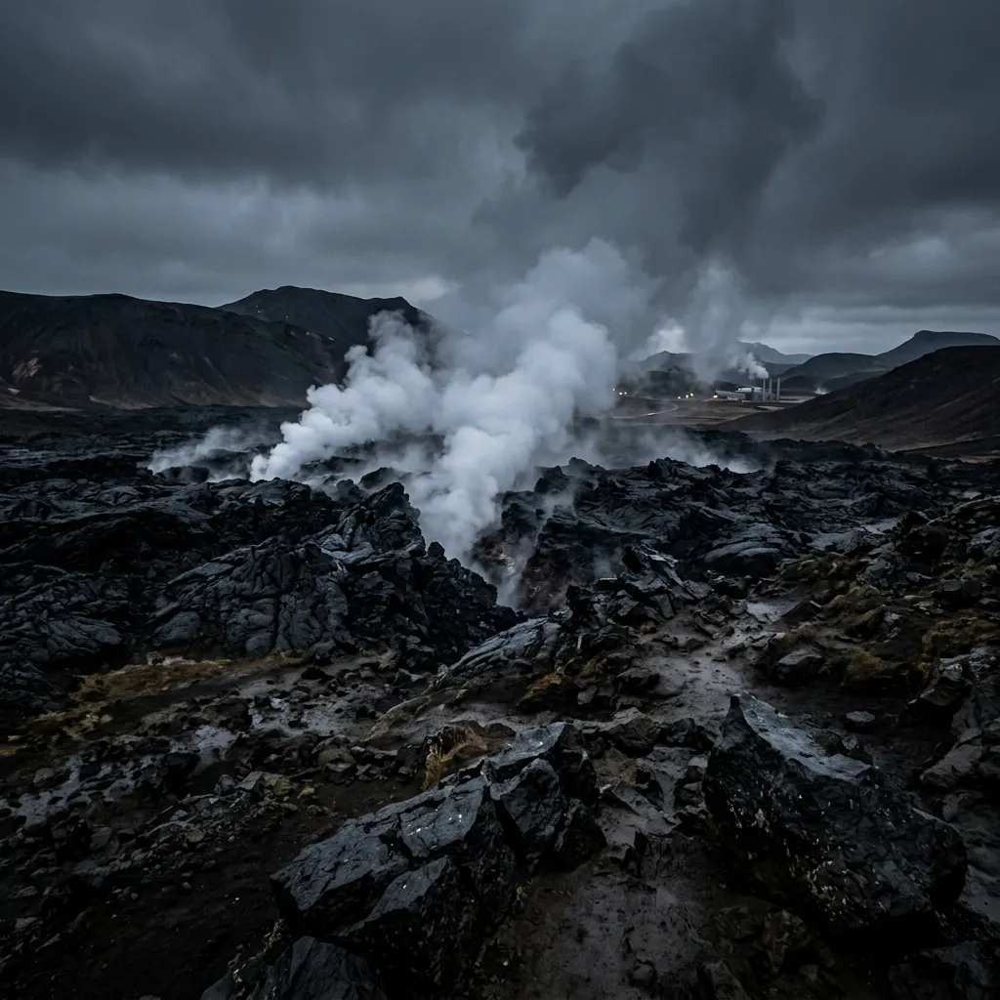
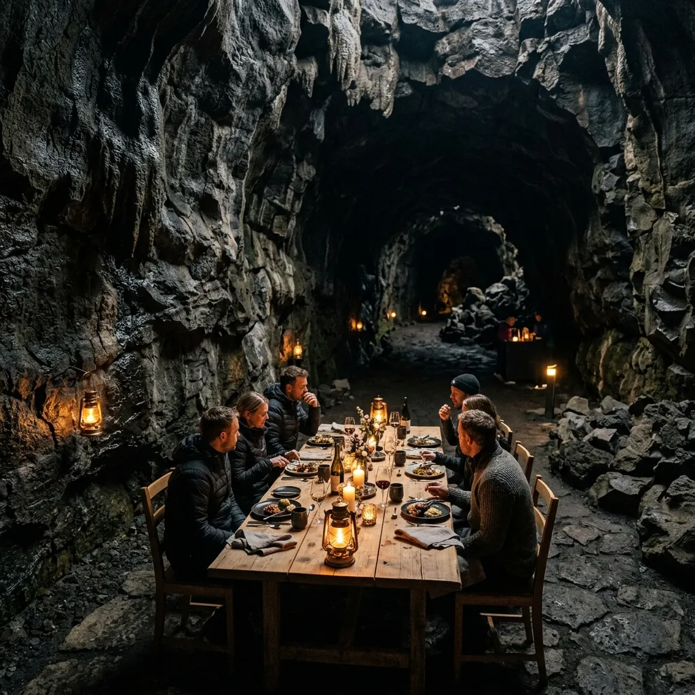
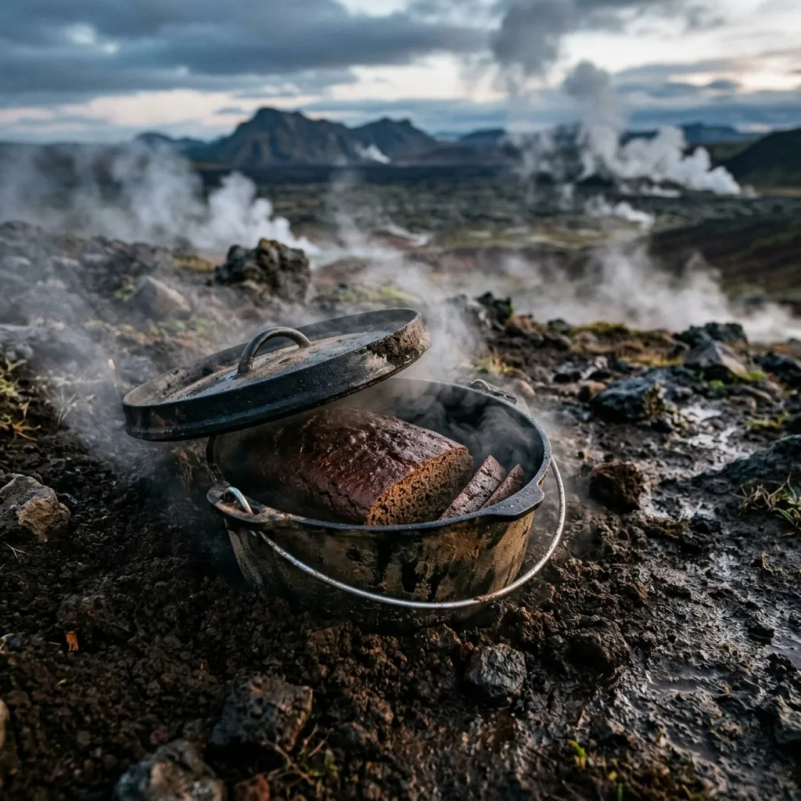

Geothermal Subterranean Baking Inside Iceland's Volcanic Lava Tubes
Hverir Geothermal Hearth slow-bakes traditional volcanic rye bread and wild Arctic delicacies inside active geothermal steam vents.
Step off the snow-covered Krafla lava field and descend three metres into a natural basalt chamber warmed by the internal heat of the Earth. Here in Northern Iceland, we bury heavy iron pots of dark rye batter directly into 95°C geothermal clay, letting natural volcanic steam transform grain into dense, caramelized rúgbrauð over twenty-four hours. We invite adventurous travelers to dine beneath basalt arches, tasting food cooked by the subterranean pulse of the volcano.
Reserve ExpeditionGeothermal Subterranean Baking & 24-Hour Earth Clay Rúgbrauð

Lava Tube Hearth
Baking in a volcanic lava tube is an exercise in absolute patience and deep respect for geological forces. Rather than relying on commercial electric ovens or timber fires, our hearth harnesses the natural geothermal steam vents bubbling up through the Krafla rift zone.
Steam Temp 95°C
We mix coarse rye flour, dark syrup, and fresh spring water before sealing the batter inside heavy cast-iron Dutch ovens.
Rúgbrauð Crust
Over twenty-four hours of subterranean baking, the natural sugars in the rye slowly caramelize under gentle geothermal pressure, producing a dark, dense bread with a rich mahogany crust and a tender, malted crumb.

Cast Iron Dutch Oven
These pots are lowered into hand-dug pits in the superheated volcanic clay, where the soil maintains a constant, humid 95°C without fluctuation.
Lichen Salt & Birch Ash
The surrounding basalt rock walls absorb excess moisture while trapping the subtle sulfurous minerals of the earth, imparting a uniquely complex, earthy aroma that no conventional bakery on Earth can replicate. Every loaf is unburied by hand at dawn, wrapped in damp linen, and served warm alongside hand-churned Icelandic butter seasoned with flaky geothermal sea salt and wild birch ash. It is not merely a meal; it is a direct edible link to the volcanic crust resting miles beneath your boots.
Foraged Botanicals & Volcanic Cave Ferments
To properly complement the profound depths of our prolonged geothermal baking, our pantry relies exclusively on ingredients gathered directly from the harsh volcanic tundra surrounding the Krafla caldera. These highly resilient flora endure savage Arctic winds and plunging winter temperatures, only to be meticulously preserved in the deep, humid cellars of our basalt caves. This constant subterranean humidity provides an unparalleled, stable environment for wild yeast harvesting, allowing our team to cultivate ferments of astonishing complexity without any reliance on industrial refrigeration or artificial climate control.
Arctic Thyme & Sea Buckthorn
Plucked from the perilous, wind-scoured ridges above the Krafla caldera, these robust botanicals are dried extremely slowly utilizing radiant geothermal heat. This gentle desiccation locks in their intense, floral astringency and bright acidity, ready for winter use.
Reindeer Lichen Ash
Carefully gathered from the frozen tundra floor during brief autumn windows, this delicate lichen is reduced to a fine, mineral-rich ash over subterranean thermal vents, imparting a profound earthy smoke to our heavy winter cures and salted butters.
Subterranean Whey Ferments
Raw skyr whey is stored in heavy, porous ceramic vessels deep within the lowest levels of the lava tube. The hyper-stable ambient cavern temperature encourages a slow, entirely wild fermentation yielding tart, vibrant profiles that cut through the richness of our braised meats.
Reports from the Basalt Cavern
Over 1,200 Loaves Unburied by Hand from Krafla Geothermal Clay.
Since our inception, the subterranean dining room has hosted intrepid explorers and respected researchers from across the globe, uniting them in the shared awe of tasting food cooked directly by the tectonic energy of the Earth's mantle.
Read Full Visitor Reviews"The absolute depth of flavour in this 24-hour geothermal rye bread is unparalleled. It is a profound, earthy revelation that completely redefines our understanding of slow-baking and harnessing natural energy."
— Chef Magnus Einarsson, Nordic Culinary Journal
"Dining inside an active thermal lava tube fundamentally shifts your perspective on the brutal forces shaping this island. It is the perfect, visceral intersection of harsh geology and refined gastronomy."
— Dr. Freja Lind, Krafla Volcanology Station
Book Your Subterranean Table
Due to the delicate nature of the cavern ecosystem and the strict ambient thermal limits of the active lava tube, our dining expeditions are strictly limited to a maximum of 16 guests per evening. Reservations are essential, highly constrained, and must be secured months in advance. Crucial Logistic Note: Accessing the cavern requires a rigorous 15-minute guided snow-hike from the Krafla geothermal parking lot across uneven terrain. Heavy, warm wool base layers and sturdy waterproof boots are strictly recommended for all attendees.